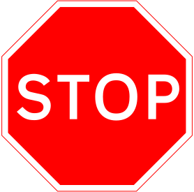
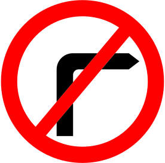

ઓવરટેક કરવાની મનાઈ છે
અંગ્રેજી નામ No overtaking
આ સાઇનનો શું અર્થ છે?
રસ્તાના આ ભાગમાં બીજા વાહનોને ઓવરટેક ન કરો.
Do not overtake other vehicles on this stretch of road.
App Store પરથી ડાઉનલોડ કરોઅંગ્રેજી નામ No overtaking
રસ્તાના આ ભાગમાં બીજા વાહનોને ઓવરટેક ન કરો.
Do not overtake other vehicles on this stretch of road.
App Store પરથી ડાઉનલોડ કરોમફત: સાઇનના 3 વિષયો અને કારના ભાગોના 25 શબ્દો. Signo Pro બધું ખોલે છે.

રોકાઓ અને માર્ગ આપોStop and give way મુખ્ય રસ્તા પરના ટ્રાફિકને માર્ગ આપોGive way to traffic on major road
મુખ્ય રસ્તા પરના ટ્રાફિકને માર્ગ આપોGive way to traffic on major road વાહનો માટે પ્રવેશ નિષેધNo entry for vehicular traffic
વાહનો માટે પ્રવેશ નિષેધNo entry for vehicular traffic સામેથી આવતા વાહનોને પ્રાથમિકતા આપોGive priority to vehicles from opposite direction
સામેથી આવતા વાહનોને પ્રાથમિકતા આપોGive priority to vehicles from opposite direction સામેથી આવતા વાહનો પર તમને પ્રાથમિકતા છેTraffic has priority over oncoming vehicles
સામેથી આવતા વાહનો પર તમને પ્રાથમિકતા છેTraffic has priority over oncoming vehicles
જમણે વળવાની મનાઈ છેNo right turn